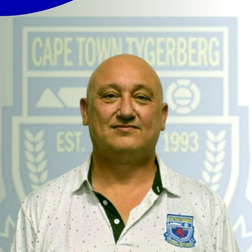

Three decades of football right across Cape Town
The official SAFA-affiliated home of the Cape Town Tygerberg Local Football Association. Every club, every fixture, result and log across the region, since 1993.

Welcome to the official home of Cape Town Tygerberg football. For over thirty years the association has organised the game for clubs right across our city, and whoever you are, there is a place for you here.
Explore the site
There is a lot here. These are the main places to go — tap through to what you need.
Match Centre
Fixtures, results and league logs across every division.
Clubs & the Map
All 50 clubs and where each one plays, on the map.
Club Zone
Live referee appointments, disciplinary rulings and card tracking.
Grounds & Directions
Every club's home ground with one-tap directions.
Referees
Officiating, the grades and how to take up the whistle.
Safeguarding
Keeping children safe, and how to raise a concern.
Fees & Joining
What it costs and how a club joins the association.
Governance & Finance
Constitution, rules, committee and audited financials.
Who plays our football
Registered-player figures for the current 2024–2026 SAFA card cycle, from the CTTLFA registration database as at 3 September 2026. Close to two out of every three registered players are children.
2024–2026 SAFA card cycle
64% of registered players
33% of registered players
Mini football, where it all starts
Our Mini section, the U/7 to U/11 age groups, is the entry point to the whole game. In 2026 clubs entered 299 mini teams, close to a third of every team in the association. Mini numbers are the leading indicator of our future: today's U/8 is tomorrow's senior player, coach and referee, so we watch this section closely and back the clubs that grow it.
More on junior football →Match Centre
Fixtures, results and standings — updated each match day by the association's competitions office.
Upcoming Fixtures
A1 PremierLatest Results
Round 14Straight from our Facebook
Results, match-day photos and announcements land on our Facebook page first, often the same day, like our latest InterLFA results. It is the page we update every week, so follow @capetowntygerberg to never miss a beat across the league.
@capetowntygerberg
News & Announcements
Match reports, association updates and everything happening across the league.
From the Albums
Finals day, awards evenings and the golf day — moments from around Tygerberg football.
Get Involved
Whether you play, officiate, coach or support — there is a place for you in Tygerberg football.
Sponsor
Partner with the association and reach thousands of players and supporters.
Become a partner →Football, without compromise.
To provide, without compromise, professionally organised league and cup competitions and quality administration for all stakeholders within the Cape Town Tygerberg Local Football Association.
- #PlayAndRespect — a season-long campaign empowering coaches and players.
- Transparent governance — constitution, financials and reporting published for members.
- Development first — pathways from under-7 grassroots to senior competition.
Match Centre
Logs, fixtures and results for every senior and junior league in the association. Choose a competition to see how it's shaping up.
How to use the Match Centre
Pick any competition from the Competition selector below to see its live league log, then switch between Fixtures and Results. Every division is here: seniors, reserves, veterans, women's and all junior age groups from Under-12 to Under-18.
View the Junior Combined Logs →Premier Division
League LogJunior Combined Logs
A club's junior teams, counted as one. Where the age-group logs rank a single age group, the combined log measures how a club is performing right across its junior programme, by adding its Under-12, Under-14, Under-16 and Under-18 teams together into one table.
For each Premier tier we take the Under-12, Under-14, Under-16 and Under-18 logs and group every club's teams together.
We add each club's points, goal difference and games played across all four teams, then rank the clubs by total points (goal difference splits ties).
The right-hand columns show where each club sits in its own age-group log, so you can see the strong and weak age groups at a glance.
Green highlights the log leader. Pts, GD and P under "Combined" are the club's totals across all four junior age groups; the right-hand columns show each club's position in its own age-group log.
Submissions
One place for match-day forms. Referees, club officials and team managers use the buttons below to send in results, team returns and reports after a game. Choose a form and it opens straight away.
If a button will not open, type the address into your browser: cttfa.co.za/junior-match-result, /senior-match-result, /team-return, /referee-incident-report or /referee-send-off.
Weekend Results
Every score from across the Cape Town Tygerberg LFA, senior and junior, in one place.
Affiliated Clubs
The clubs that make up the Cape Town Tygerberg Local Football Association. Tap a club to see its teams and how they're performing across the league; use the icons to visit their website or Facebook.
Where our clubs are
Our fifty member clubs are spread right across Cape Town, from Table View and Bothasig in the north to Camps Bay and Green Point on the seaboard, Fish Hoek in the south and out to Macassar and Somerset West in the east. Each pin sits on the club's home ground, drawn from the 2026 fixtures. Tap a pin for the ground and one-tap directions.
News & Events
Match reports, announcements and the fixtures diary, plus live updates straight from our Facebook page.
@capetowntygerberg
Upcoming Events & Tournaments
Key dates across the CTTLFA calendar.
Gallery
Match days, finals and association events, grouped by event. Tap an album to see every photo.
Album
Knockout Cups
Win or go home. Every knockout competition in the association — senior, women's, veterans and all the junior age groups — with each round's draw, results and fixtures as they are played. Choose a cup to follow its road to the final.